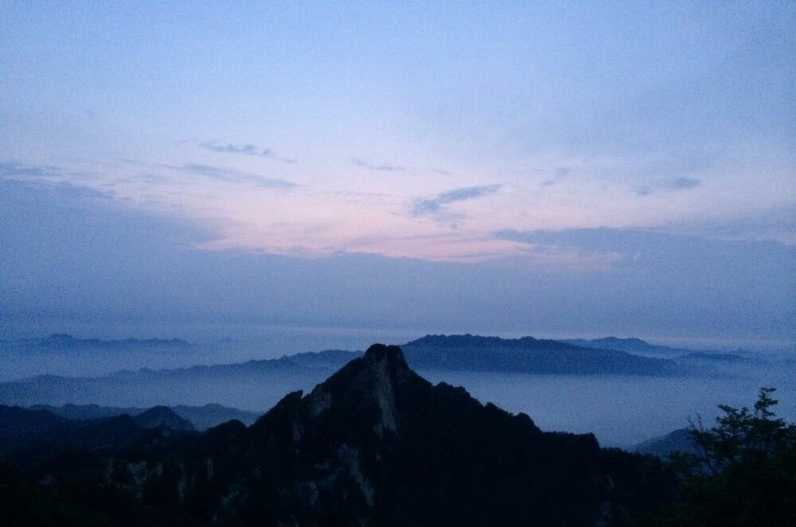
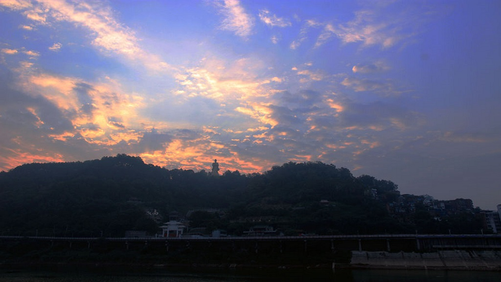
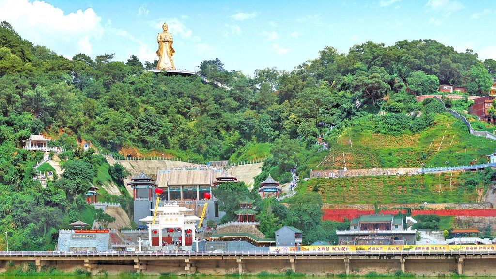

-
西江美景1
西江美景2
西江美景3
西江美景4
- 
-
中国当代著名国学家、文化学者肖健指出，根据司马迁《史记》“（舜帝）南巡狩，崩于苍梧（今广西梧州）之野，葬于江南九疑（白云山）。”的史实和当代专家学者们的学术成果，可以确认，梧州是一座有着4100年以上历史的古老城市，梧州的文明史始于舜帝，梧州是岭南文化和珠江文化的发祥地，古代岭南地区和珠江流域的政治、经济、文化中心，珠江流域与黄河流域、长江流域共同缔造了中华民族多元的、光辉灿烂的上下五千年文明！ —梧州白云山（古称九疑），是中华文明发祥地之一，有神鹿台、光华亭、锦鸡岩等舜帝遗迹，是海内外中华子孙寻根问祖、怀古凭吊的圣地。
-
梧州苍海公园
立足于梧州，在苍海边。全名梧州苍海公园。它是广西梧州市打造苍海新城的重大项目之一，公园建设围绕“自然、生态、绿色”的理念，结合梧州特色历史文化，让市民游客在其中充分体验梧州的绿色生态文明和西江文化。梧州苍海公园占地约21万平方米，计划总投资3.16亿元，建设内容包括景观绿化及公共设施等。
- 
- 
龙母庙
梧州龙母庙始建于北宋初年，是一座千年古建筑，是为纪念战国时期我国南方百越民族女首领“龙母”而兴建的庙宇。占地面积11万多平方米，建有牌坊、前殿、龙母宝殿、龙母寝宫、钟楼、鼓楼、塔楼等，以及中国最高的38米龙母圣像。是粤港澳乃至东南亚的祈福圣地，堪称中国龙母第一庙。
龙母文化已成为梧州最重要的旅游资源，梧州每年都在龙母庙举行一系列龙母文化旅游活动，正月廿一为龙母开金库，五月初八为龙母诞辰，八月初一为龙母得道诞，十一月初一为朝母节，吸引成千上万的粤港澳等地游客到龙母庙旅游。每次龙母节庆活动期间，广州番禺胜胜堂都组织4000多香客来梧州参加活动。
骑楼城
位于广西梧州河东老城区，现存骑楼街道22条，总长7公里，最长街道达2530米，骑楼建筑560幢，规模之大、数量之多，国内罕见,被誉为“世界第八奇迹”。
- 骑楼城夜晚的“灯红酒绿”
- 骑楼城白日景象1
- 骑楼城白日景象2
梧州玫瑰湖公园
在1998年6月24日动土兴建，园内山林面积35公顷。整个公园地形起伏，环境优美，以自然布局为主，采用中国传统造园手法，结合现代造园的要求，力求新意，创造富有田园情调的特点和自然情趣的园林景观，将公园建成具有文化、娱乐、休闲、观景、游览、度假等多种功能于一体的市级综合性公园。
- 玫瑰湖可看美景
- 玫瑰湖可玩
- 玫瑰胡可跑